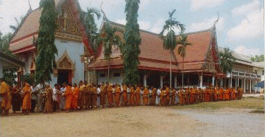
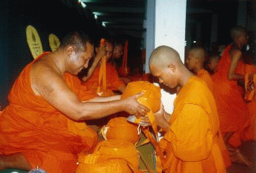
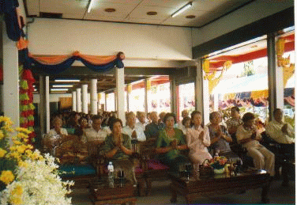
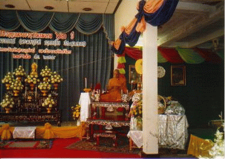
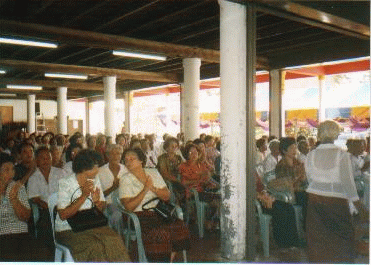
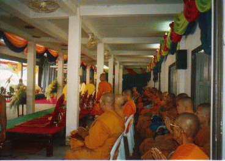
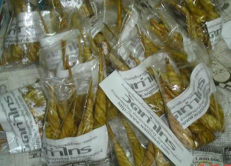
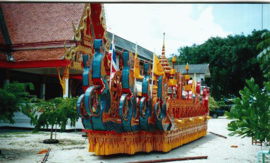
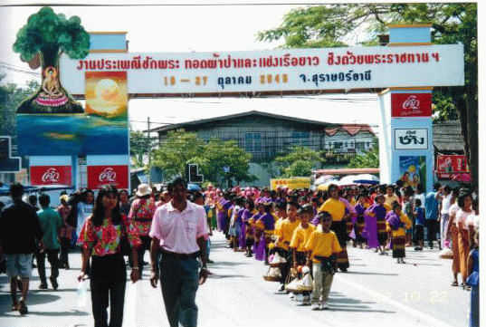

|
๑๒.
กิจกรรมที่วัดจัดทำเป็นประจำทุกปี.-
๑.จัดอบรมนักเรียนบาลีก่อนสอบบาลีสนามหลวง
เป็นเวลา ๑๖ วัน ในระหว่างเดือน มกราคม
- กุมภาพันธ์ ของทุกปี ๆ ละ ๑ ครั้ง สิ้นเงินปีละประมาณ ๓๘๐,๐๐๐.๐๐
บาท
๒.จัดงานเข้าประพฤติวัตรปฏิบัติธรรมเข้าปริวาสกรรมและบวชชีพราหมณ์ปฏิบัติธรรม
ในวันที่ ๑๕ - ๒๕ เดือน มีนาคม ของทุก ๆ ปี มีพระภิกษุสามเณรจากทั่วประเทศ
จำนวน ๑๐๐ - ๒๔๐ รูป และมีประชาชนมีจิตศรัทธาให้ความสนใจร่วมบวชชีพราหมณ์ปฏิบัติธรรม
ประมาณ ๘๐ -๑๔๐ คน สิ้นเงินปีละประมาณ ๑๔๐,๐๐๐.๐๐ บาท

ภาพกิจกรรมในงานประพฤติวัตรปฏิบัติธรรมและบวชชีพราหมณ์
ซึ่งจัดมานานกว่า ๒๐ ปี
(ในภาพ ประชาชนร่วมทำบุญตักบาตรพระสงฆ์ประมาณ
๒๐๐ รูป)
๓.จัดให้มีการบรรพชาและอบรมสามเณรภาคฤดูร้อน
เพื่อพัฒนาเยาวชนในภาคฤดูร้อน ในระหว่างวันที่ ๑๐-๓๐ เมษายนของทุก
ๆ ปี สิ้นเงินปีละประมาณ ๑๘๕,๐๐๐.๐๐ บาท
|

|
 |
|
ภาพพิธีบรรพชาสามเณรภาคฤดูร้อน,
และภาพประชาชนร่วมทำบุญตักบาตรฉลองสามเณรบวชใหม่
่ในงานบรรพชาและอบรมสามเณรภาคฤดูร้อน
|
๔.จัดให้มีงานสรงน้ำพระและดำหัวผู้สูงอายุ
ซึ่งเรียกงานนี้ว่า งานวันกตัญญู เป็นประจำทุกปี
ในระหว่างวันแรม ๑๒ - ๑๓ - ๑๔ ค่ำ เดือน ๕ ของทุก ๆ ปี สิ้นเงินในการดำเนินการปีละประมาณ
๑๓๐,๐๐๐.๐๐ บาท - ๒๘๐,๐๐๐.๐๐ บาท
๕.เปิดดำเนินการเรียนการสอน(พระภิกษุสามเณร) แผนกธรรม - บาลี ในต้นเดือน
พฤษภาคม เป็นต้นไปของทุก ๆ ปี สิ้นเงินปีละประมาณ ๗๕,๐๐๐.๐๐ บาท
๖.เปิดดำเนินการเรียนการสอนนักเรียนในโรงเรียน แผนกธรรมศึกษาในโรงเรียน
วัดท่าไทร (ดิตถานุเคราะห์) ในระหว่างเดือน มิถุนายน- พฤศจิกายน
ของทุก ๆ ปี สิ้นเงินในการดำเนินการปีละประมาณ ๓๕,๐๐๐.๐๐ บาท
๗.จัดส่งพระภิกษุซึ่งเป็นครูสอนพระปริยัติธรรมไปทำการสอนในสำนักศาสนศึกษาต่าง
ๆ เช่น วัดแสงประดิษฐ์ อำเภอกาญจนดิษฐ์, วัดเขาสุวรรณประดิษฐ์ อำเภอดอนสัก,
โรงเรียนกาญจนดิษฐ์ อำเภอกาญจนดิษฐ์ เป็นต้น เป็นประจำทุกปี
๘.จัดให้มีงานอนุรักษ์ประเพณี ทำบุญข้าวตอกประจำปี ทุกวันแรม
๘ ค่ำ เดือน ๘ (หลังเข้าพรรษาแล้ว ๗ วัน)
๙.จัดงานเทศนามหาชาติและบวชชี-พราหมณ์ เพื่อร่วมปฏิบัติธรรมและฟังธรรม
ในระหว่างวันที่ ๒๕ - ๒๖ - ๒๗ สิงหาคม ของทุกปี สิ้นเงินปีละประมาณ
๑๓๐,๐๐๐.๐๐ บาท
|

|
 |
|

|
 |
|
ภาพถ่ายงานประเพณีเทศน์มหาชาติและงานทำบุญฉลองอายุ
"พระราชพิพัฒนาภรณ์" ประจำปี ๒๕๔๕
ซึ่งคณะศิษยานุศิษย์ได้จัดขึ้นระหว่างวันที่
๒๔ -๒๖ สิงหาคม ของทุกปี
|
๑๐.จัดงานวันสารท
เดือน ๑๐ (งานรับ -ส่ง ตายาย) เพื่อเป็นการสืบสานประเพณีและวัฒนธรรมอันดีงามของ
ชาวภาคใต้ของไทย ในเดือน ๑๐ ของทุก ๆ ปี
๑๑.ประเพณีห่อข้าวต้มลูกโยนออกพรรษา
โดยจัดให้มีประเพณีห่อข้าวต้มลูกโยน หรือภาษาถิ่นเรียกว่า "แทงต้ม"
โดยใช้ข่าวสารเหนียวปีละประมาณ ๖๔ - ๙๙ ถัง ตามโอกาสที่เห็นสมควร
โดยกระทำสืบทอดมาตั้งแต่ปี ๒๕๒๕ เพื่อแจกจ่ายกันนำไปรับประทาน เนื่องใน
งานประเพณีชักพระ-ทอดผ้าป่า ประจำปีของจังหวัด สุราษฎร์ธานี เพื่อเป็นการร่วมอนุรักษ์และสืบสานประเพณี
วัฒนธรรมอันดีงามของไทย
โดยในแต่ละปีจะมีชาวบ้านหลายร้อยคน
จากหลายอำเภอทั้งใกล้ ไกล ในจังหวัดสุราษฎร์ธานี และต่างจังหวัด
ได้ร่วมกันทำขนมต้ม ในวันขึ้น ๑๔ - ๑๕ ค่ำ เดือน ๑๑ (ในเทศกาลวันออกพรรษา)
ของทุกปี โดยเฉพาะอย่างยิ่ง วันขึ้น ๑๕ ค่ำ เดือน ๑๑ ของทุกปี ตั้งแต่เช้ามืด
จนกระทั่งดึก ชาวบ้านจะพร้อมใจกันเดินทางมายังวัดท่าไทร เพื่อร่วมกันห่อข้าวต้มลูกโยนที่วัดท่าไทร
ด้วยความสมัครสมานสามัคคีกัน เพื่อจะได้ใช้ทำบุญตักบาตร และแจกจ่ายประชาชนที่มาร่วมงานบุญชักพระ-ทอดผ้าป่าของจังหวัดสุราษฎร์ธานี
ที่จะมีขึ้นในเช้าตรู่ของวันแรม ๑ ค่ำ เดือน ๑๑ โดยคณะพุทธบริษัทจะนำขนมต้มไปไว้ในรถพนมพระ
และแจกจ่ายให้ประชาชนที่มาทำบุญและร่วมงานประเพณีชักพระของสุราษฎร์ธานี
สำหรับการทำขนมต้มของวัดท่าไทร
กระทำสืบทอดมาตั้งแต่ปี พ.ศ. ๒๕๒๕ เป็นต้นมา พร้อมกับประเพณีชักพระ-ทอดผ้าป่า
ในวันแรม ๑ ค่ำ เดือน ๑๑ หรือวันออกพรรษา โดยเจริญรอยตามแบบอย่างชาวพุทธครั้งในอดีต
ตามพุทธประวัติที่ปรากฏว่า พระพุทธเจ้าเสด็จไปจำพรรษาที่สวรรค์ชั้นดาวดึงส์
เพื่อเทศนาอภิธรรมปิฎกโปรดพุทธมารดาจนครบไตรมาสแล้ว ถึงวันแรม ๑
ค่ำ เดือน ๑๑ จึงเสด็จลงมาจากสวรรค์ชั้นดาวดึงส์ที่ประตูเมืองสังกัสสะ
ประชาชนพากันไปต้อนรับพระพุทธองค์และทำบุญตักบาตรอย่างเนืองแน่น
และได้มีการห่อข้าวต้มลูกโยน ทำบุญใส่บาตรตั้งแต่บัดนั้นเป็นต้นมา
ขั้นตอนการทำนั้น
คือ การผัดข้าวเหนียวด้วยกะทิสด พอได้ที่แล้วก็จะใส่ถั่ว และน้ำตาล
จนได้ที่ ก่อนมาห่อด้วยใบกะพ้อ ที่สอดมัดกันเองโดยไม่ต้องใช้ตอกหรือเชือก
และ "ห่อมัด" ซึ่งคล้ายกับห่อต้ม ต่างกันก็แต่ห่อด้วยใบจากหรือมะพร้าวอ่อน
เป็นรูปสี่เหลี่ยมผืนผ้ายาวประมาณ 4-5 นิ้ว แล้วใช้เชือกมัดเป็นเปลาะ
ๆ ก่อนนำไปต้มแล้วนำไปนึ่งประมาณ ๔๕ นาที จึงจะสุกนำมารับประทาน
และแจกจ่ายได้
|
|
|
ข้าวต้มลูกโยน
หรือภาษาถิ่นเรียกว่า "แทงต้ม"
ที่ห่อเสร็จใหม่ ๆ
|
|

|
|
ที่ผ่านกระบวนการต่าง
ๆ พร้อมรับประทานได้ ที่บรรจุในถุง ๆ ละ ๗ - ๑๐ ลูก พร้อมแจกจ่าย
|
๑๒.จัดทำเรือพนมพระและรถพนมพระเข้าร่วมในขบวนแห่ของ
งานประเพณีชักพระ- ทอดผ้าป่า ประจำปีของจังหวัด สุราษฎร์ธานี
เพื่อเป็นการร่วมอนุรักษ์และสืบสานประเพณี วัฒนธรรมไทย (ภาคใต้)
ในเทศกาลออกพรรษา ของทุก ๆ ปี (ประมาณเดือน ตุลาคม)



ภาพแสดงขบวนแห่รถพนมพระของวัดท่าไทร
ซึ่งจัดเข้าร่วมบวนแห่ในงานประเพณีชักพระทอดผ้าป่าออกพรรษา ของ จ.สุราษฎร์ธานี
ทุก ๆ ปี

๑๓.ประเพณีทอดผ้าป่าออกพรรษา
การทอดผ้าป่านี้ ในทางพระพุทธศาสนานับเป็นการกุศลอันสำคัญ
เพราะพระภิกษุสงฆ์ทั้งหลาย ต้องใช้ผ้าบังสุกุลจีวรเป็นปัจจัยเครื่องอาศัยประการหนึ่ง
พึงเห็นว่าเมื่อพระอุปัชฌาย์ให้อุปสมบทแก่กุลบุตรแล้ว ก็บอกอนุศาสน์
คือ คำสอนเบื้องต้น ในบัดนั้น ในอนุศาสน์นั้น มีการสอนให้ใช้ผ้าบังสุกุลจีวรเป็นนิตย์อยู่ด้วย
แต่ก็ทรงอนุญาตให้ใช้ผ้าเป็นอติเรกลาภอย่างอื่นได้เหมือนกัน ผู้ทอดผ้าบังสุกุลจีวร
(ผ้าป่า) นั้น ก็ได้ชื่อว่าช่วยให้พระภิกษุสงฆ์ได้รักษาประเพณีข้อนี้ให้มั่นคงอยู่ได้
การทอดผ้าป่านั้น
เคยมีมาแต่ครั้งพุทธกาล ที่เป็นครั้งสำคัญที่สุดก็คือ เมื่อครั้งนางบุณณทาสี
ธิดาของเศรษฐีตระกูลหนึ่งถึงแก่มรณะ เจ้าภาพก็เอาผ้าเนื้อดี ทอดเป็นผ้ามหาบังสุกุลนี้
ได้บังเกิดมหาอัศจรรย์ มีแผ่นดินไหวถึงเจ็ดครั้ง มหาชนต่างก็นมการทอดผ้าป่าแต่นั้นเป็นลำดับมา
แต่ก็ไม่ได้จำกัดเวลาว่า จะทอดกันเวลาไหน เมื่อใครจะมีศรัทธา และพร้อมเมื่อไรก็สามารถทอดถวายแด่พระสงฆ์ได้ทันที
ส่วนการทอดผ้าป่าแด่พระภิกษุสงฆ์ที่จำพรรษาในวัดต่าง
ๆ ในวันออกพรรษาของจังหวัดสุราษฎร์ธานี คือ วันแรม ๑ ค่ำ เดือน ๑๑
นิยมจัดผ้าอันเป็นบังสุกุลจีวร พร้อมด้วยเครื่องบริวารต่าง ๆ ที่จะขาดเสียมิได้ก็คือผ้าหนึ่งผืนเพื่อให้พระสงฆ์พิจารณา
และอาหารปิ่นโต ๑ เถา เพื่อถวายให้พระท่านได้ฉัน ส่วนสิ่งของนอกจากที่กล่าวมานั้นก็มีการจัดถวายพระสงฆ์ตามกำลังศรัทธา
โดยนิยมจัดพุ่มผ้าป่าไว้บริเวณหน้าบ้าน มีเลขหมายประจำพุ่มไว้ บางบ้านก็จัดทำพุ่มผ้าป่าอย่างงดงามและมีการประกวดกัน
มีกรรมการซึ่งทางเทศบาลได้จัดตั้งขึ้นพิจารณาให้ได้รับรางวัล เป็นเกียรติ
เป็นที่ระลึกในการบำเพ็ญกุศล ผู้จัดการคือเทศบาลและอำเภอร่วมกัน
ได้นำสลากนั้น ๆ ถวายแด่พระภิกษุสงฆ์ โดยไม่จำเพาะเจาะจงแล้วแต่ท่านจะจับสลากได้แล้ว
ก็นิมนต์ไปชักผ้าป่าตามสถานที่นั้น ๆ ในเวลาเช้าตั้งแต่ ๐๖.๐๐ น.
เป็นต้นไป อันนับว่าเป็นกุศลสังฆทานในพระพุทธศาสนาประการหนึ่ง

ภาพถ่าย นางพยอม
สารสิน
ผู้ริเริ่มงานประเพณีทอดผ้าป่าออกพรรษาของ
วัดท่าไทร และ จังหวัดสุราษฎร์ธานี
ซึ่งเป็นมรดกไทย มรดกโลก
ประเพณีการทอดผ้าป่าในเทศกาลวันออกพรรษา
ซึ่งตรงกับวันแรม ๑ ค่ำ เดือน ๑๑ ของจังหวัดสุราษฎร์ธานีตามที่ได้กระทำกันอยู่
ณ บัดนี้ ได้มี นางพยอม นามสกุลเดิมคือ เริ่มก่อสกุล (ธิดาของนายเอม
นางขำ เริ่มก่อสกุล) ซึ่งมีภูมิลำเนาอยู่ที่ตลาดท่าทองใหม่ ตำบลท่าองใหม่
อำเภอกาญจนดิษฐ์ จังหวัดสุราษฎร์ธานี เป็นผู้ริเริ่มจัดให้มีประเพณีทอดผ้าป่าออกพรรษาขึ้น
ณ วัดท่าไทร ตำบลท่าองใหม่ อำเภอกาญจนดิษฐ์ จังหวัดสุราษฎร์ธานี
ทุกวันแรม ๑ ค่ำ เดือน ๑๑ (หลังออกพรรษา ๑ วัน) ขณะเดียวกันได้จัดให้มีการชักพระ
(ชักลากพระ) โดยใช้เรือทางน้ำ เรือทางบก เพื่อให้ประชาชนทั่วไปได้สักการะบูชาให้เกิดสิริมงคลในโอกาสออกพรรษา
เทียบเคียงการจัดฉลองวันเทโวโรหณะในอดีตกาลครั้งพระพุทธเจ้ายังทรงพระชนม์อยู่
และมีการละเล่นกีฬาทั้งทางบกและทางน้ำอย่างสนุกสนาน ซึ่งประเพณีดังกล่าวยังคงได้รับการอนุรักษ์ให้มีอยู่จวบจนกระทั่งปัจจุบัน
ต่อมานางพยอม
เริ่มก่อสกุล ต่อมาภายหลัง สมรสกับ นายฉาย สารสิน จึงได้เปลี่ยนนามสกุลเป็น
สารสิน ตามสามี ได้ย้ายไปอยู่ กับสามี ที่ตรอกไม้ไผ่งาช้าง ข้างวัดกลาง
ในตลอดบ้านดอน และได้ได้จัดให้มีประเพณีดังกล่าวขึ้นอีกที่บ้านดอน
(อำเภอเมืองสุราษฎร์ธานี ในปัจจุบัน) เมื่อ พ.ศ. ๒๔๗๑ โดยเริ่มแรกได้นิมนต์พระภิกษุสงฆ์จากวัดท่าไทรเป็นหลักในการไปพิจารณาผ้าบังสุกุล
ซึ่งภายหลังเจ้าอาวาสวัดท่าไทรในขณะนั้น ก็ได้แนะนำให้นิมต์พระภิกษุซึ่งจำพรรษาอยู่ในวัดที่อยู่ในบ้านดอนซึ่งใกล้บ้านไปพิจารณาชักผ้าบังสุกุล
(ผ้าป่า)ด้วย จึงถือเป็นประเพณีปฏิบัติซึ่งได้กระทำกันสืบต่อมาจนกระทั่งปัจจุบันนี้
ครั้นกาลล่วงมาถึง
หลวงพ่อชม คุณาราโม (ซึ่งต่อมาได้รับพระราชทานสมณศักดิ์เป็น พระครูดิตถารามคณาศัย)
ได้รับแต่งตั้งให้ดำรงตำแหน่งเจ้าอาวาสวัดท่าไทร พ.ศ. ๒๔๗๑ ท่านได้พิจารณาเห็นว่าไม่เป็นการสะดวกแก่พระภิกษุสามเณรในการที่จะไปพิจารณาผ้าบังสุกุล
(ชักผ้าป่า) ซึ่งนางพยอมได้นิมนต์เอาไว้ เพราะจัดในวันเดียวกันกับประชาชนพุทธบริษัทบ้านท่าทองใหม่
จึงได้เลื่อนการจัดประเพณีดังกล่าวของวัดท่าไทรจากวันแรม ๑ ค่ำ ไปเป็น
แรม ๘ ค่ำ เดือน ๑๑ (หลังจากที่นางพยอมจัดทำและทอดผ้าป่าที่ตลอดล่าง
บ้านดอนเป็นเวลา ๗ วัน)
และต่อมา
พ.ศ. ๒๕๒๒ (๑๒ พ.ย. ๒๕๒๒) พระครูดิตถารามคณาศัย ได้มรณภาพลง
พ.ศ.
๒๕๒๒ พระมหาสนอง วิโรจโน ป.ธ. ๙ ได้รับหน้าที่เป็นผู้รักษาการแทนเจ้าอาวาสวัดท่าไทร
และได้สืบสานประเพณีดังกล่าวไว้เช่นเดิม
ต่อมา
พ.ศ. ๒๕๒๓ พระมหาชูชาติ กนฺตวณฺโณ (พระราชทินนามปัจจุบันคือ พระราชพิพัฒนาภรณ์)
ได้เป็นเจ้าอาวาส และท่านได้พิจารณาเห็นว่าเพื่อให้เกิดกายสามัคคีจึงได้ริเริ่มให้จัดตั้งพุ่มผ้าป่าในบริเวณวัดท่าไทรแทนการตั้งพุ่มที่บ้านของชาวบ้านเหมือนครั้งในอดีต
ตั้งแต่ พ.ศ. ๒๕๒๔ เป็นต้นมาจวบจนกระทั่งปัจจุบัน (อ่านประเพณีทอดผ้าป่าออกพรรษาวัดท่าไทร
ที่ตีพิมพ์ในหนังสือพิมพ์)
๑๔.จัดอบรมนักเรียนนักธรรมก่อนเข้าสอบธรรมสนามหลวง
เป็นเวลา ๑๕ วันในระหว่างเดือน ตุลาคม
- พฤศจิกายน ของทุก ๆ ปี สิ้นเงินในการดำเนินการปีละประมาณ ๓๗,๐๐๐.๐๐
บาท - ๑๐๐,๐๐๐.๐๐ บาท
๑๕.จัดให้มีกิจกรรมพิเศษ
เช่น ฟังเทศน์ สนทนาธรรม เจริญวิปัสสนา ฯลฯ เนื่องในวันสำคัญทางพระพุทธศาสนา
เช่น วันมาฆบูชา วันวิสาขบูชา วันอาสาฬหบูชา เป็นต้น เป็นประจำทุก
ๆ ปี
๑๓.โครงการที่กำลังเร่งดำเนินการในปัจจุบัน.-
๑.โครงการ
บ้านช่วยวัด-วัดช่วยบ้าน เพื่อให้การสงเคราะห์ชาวบ้านและวัดวาศาสนา
ที่ได้รับความเดือดร้อน เช่น ได้รับอุทกภัย วาตภัย อัคคีภัย สิ้นเงินโดยสาร
ตกงาน เป็นต้น โดยนำเงินทุนในการดำเนินการจากผลิตผลทางการเกษตร(ผลไม้)
จำนวน ๑๒๐ ไร่ ที่สำนักสงฆ์ถ้ำสันติธารา (สาขาวัดท่าไทร) ตำบลคลองสระ
อำเภอกาญจนดิษฐ์ จังหวัดสุราษฎร์ธานี และเงินจากผู้มีจิตศรัทธาร่วมบริจาคตั้งเป็นกองทุน
๒.โครงการ
สมภารเลี้ยงเณร เพื่อให้การสงเคราะห์พระภิกษุ สามเณรในวัดท่าไทร
และในจังหวัดสุราษฎร์ธานี โดยนำรายได้จากผลิตผลทางการเกษตรคือขายยางแผ่นจากสวนยาง
จำนวน ๔๐ ไร่ (จากเนื้อที่ทั้งหมด ๖๒ ไร่)ที่ บ้านตาปาน ตำบลกรูด
อำเภอพุนพิน จังหวัดสุราษฎร์ธานี
๓.โครงการ
พ่อแม่เลี้ยงลูก เพื่อให้การสงเคราะห์ทุนประกอบอาชีพแก่ศิษยานุศิษย์ของวัดท่าไทร
โดยนำรายได้จากผลิตผลทางการเกษตร เช่น การขายลองกอง ที่ เขานมพร่า
ตำบลป่าร่อน อำเภอกาญจนดิษฐ์ จังหวัดสุราษฎร์ธานี
๔.โครงการ
สวนป่าสมุนไพรในวัด ตามนโยบายและโครงการสวนสมุนไพรในวัดของกรมการศาสนา
กระทรวงศึกษาธิการ ขณะนี้กำลังอยู่ในระหว่างการเตรียมการเพื่อดำเนินการ
๕.โครงการ
ทุนการศึกษาพระภิกษุสามเณร เพื่อให้การสันบสนุนการศึกษาแก่พระภิกษุสามเณร
ในการศึกษาเล่าเรียนนักธรรม บาลี และระดับอุดมศึกษา โดยได้รับเงินจากผู้มีจิตศรัทธา
ร่วมบริจาคตั้งเป็นกองทุนเพื่อการนี้
๖.โครงการ
จักรยานคนจน โดยให้การสงเคราะห์จักรยานแก่นักเรียนที่เรียนดีแต่ยากจน
ดังเช่น จัดซื้อจักรยานมอบให้แก่นักเรียนโรงเรียนกาญจนดิษฐ์ เป็นเงิน
๖,๐๐๐.๐๐ บาท
๗.โครงการ
สนับสนุนการแข่งขันกีฬา เพื่อให้การสงเคราะห์งบประมาณสนับสนุนการจัดการ
แข่งขันกีฬาประเภทต่าง ๆ ดังเช่น ให้การสนับสนุนการแข่งขันกีฬาของอำเภอกาญจนดิษฐ์
ปีละ ๕,๐๐๐.๐๐ บาท
๘.โครงการ
สงเคราะห์ด้านสาธารณสุข โดยการให้การสงเคราะห์กิจการโรงพยาบาลต่าง
ๆ ดังเช่น สนับสนุนการจัดซื้อเตียงคนไข้มอบให้แก่โรงพยาบาลกาญจนดิษฐ์
จำนวน ๓๐ ชุด เป็นเงิน ๓๖,๐๐๐.๐๐ บาท
๙.
โครงการให้ทุนดำเนินการ โครงการอาหารกลางวันนักเรียน ในโรงเรียนต่าง
ๆ ดังเช่น โรงเรียนบ้านม่วงลีบ อำเภอกาญจนดิษฐ์ เป็นเงิน ๕,๐๐๐.๐๐
บาท
๑๐.โครงการ
สร้างสวนป่าพระมหาชนกเฉลิมพระเกียรติ จำนวน ๔๐ ไร่ ที่ ตำบลหนองไทร
อำเภอพุนพิน จังหวัดสุราษฎร์ธานี (ขณะนี้กำลังอยู่ในระหว่างการจัดหาทุนเพื่อจัดซื้อที่ดินดังกล่าว
และเมื่อจัดซื้อเรียบร้อยแล้วจะดำเนินการปลูกป่าไม้ยืนต้น เช่น ไม้ยางนา
มะม่วง เป็นต้น
๑๑.โครงการ
มอบพระพุทธรูปสักการะบูชาแก่สถานศึกษา เช่น มอบพระพุทธรูปบูชา
หน้าตักกว้าง ๒๙ นิ้ว แก่โรงเรียนบ้านคลองสระ ตำบลคลองสระ อำเภอกาญจนดิษฐ์
เป็นต้น
๑๒.โครงการ
สนับสนุนสถานศึกษาให้พัฒนาการจัดการศึกษา โดยการมอบ "พระสมเด็จมหามงคล
วัดท่าไทร รุ่นเรารักประเทศไทย" เนื้อโลหะ ผิวกะไหล่ทอง
รุ่นแรกและรุ่นเดียวของประเทศไทย วัดท่าไทรจัดทำขึ้น แล้วมอบให้แก่สถานศึกษา
ไปจัดการมอบให้เป็นที่ระลึกแก่ผู้ที่ร่วมกับวัดท่าไทรในการสนับสนุนการพัฒนาการศึกษาแก่สถานศึกษา
(โครงการเสร็จสิ้นแล้ว) ดังนี้
| - มหาวิทยาลัยราชมหาจุฬาลงกรณราชวิทยาลัย
ห้องเรียนสุราษฎร์ธานี (วัดพัฒนาราม) |
|
|
|
| (ครั้งแรก
บริจาคเงินสด ๒ ล้าน และครั้งหลังมอบวัตถุมงคล คิดเป็นเงินอีก
๑ ล้าน) รวม |
เป็นเงิน |
๓,๐๐๐,๐๐๐.๐๐
|
บาท
|
| - สำนักงานเขตพื้นที่การศึกษาสุราษฎร์ธานี
เขต ๑ |
เป็นเงิน |
๑,๐๐๐,๐๐๐.๐๐
|
บาท
|
| -
สำนักงานเขตพื้นที่การศึกษาสุราษฎร์ธานี เขต ๒ |
เป็นเงิน
|
๑,๐๐๐,๐๐๐.๐๐
|
บาท
|
| - สำนักงานเขตพื้นที่การศึกษาสุราษฎร์ธานี
เขต ๓ |
เป็นเงิน
|
๑,๐๐๐,๐๐๐.๐๐
|
บาท
|
| - โรงเรียนสุราษฎร์ธานี
ต.ตลาด อ.เมืองฯ จ.สุราษฎร์ธานี |
เป็นเงิน
|
๑,๐๐๐,๐๐๐.๐๐
|
บาท
|
| - โรงเรียนสุราษฎร์ธานี
๒ ต.มะขามเตี้ย อ.เมืองฯ จ.สุราษฎร์ธานี |
เป็นเงิน |
๑,๐๐๐,๐๐๐.๐๐
|
บาท
|
| - โรงเรียนสุราษฎร์พิทยา
ต.ตลาด อ.เมืองฯ จ.สุราษฎร์ธานี |
เป็นเงิน |
๑,๐๐๐,๐๐๐.๐๐
|
บาท
|
| - วิทยาลัยอาชีวศึกษาสุราษฎร์ธานี
ต.ตลาด อ.เมืองฯ จ.สุราษฎร์ธานี |
เป็นเงิน |
๑,๐๐๐,๐๐๐.๐๐
|
บาท
|
๑๓.โครงการ
สนับสนุนสถานโรงพยาบาลของรัฐ โดยการมอบ "พระสมเด็จมหามงคล
วัดท่าไทร รุ่นเรารักประเทศไทย" เนื้อโลหะ ผิวกะไหล่ทอง
รุ่นแรกและรุ่นเดียวของประเทศไทย วัดท่าไทรจัดทำขึ้น แล้วมอบให้แก่สถานศึกษา
ไปจัดการมอบให้เป็นที่ระลึกแก่ผู้ที่ร่วมกับวัดท่าไทรในการสนับสนุนโรงพยาบาล
จำนวน ๒ แห่ง (โครงการเสร็จสิ้นแล้ว) ดังนี้
| - โรงพยาบาลสุราษฎร์ธานี
(รพ.ศูนย์สุราษฎร์ธานี) ต.มะขามเตี้ย อ.เมืองฯ จ.สุราษฎร์ธานี |
เป็นเงิน |
๑,๐๐๐,๐๐๐.๐๐
|
บาท
|
| - โรงพยาบาลกาญจนดิษฐ์
อ.กาญจนดิษฐ์ จ.สุราษฎร์ธานี |
เป็นเงิน |
๑,๐๐๐,๐๐๐.๐๐
|
บาท
|
๑๔.ทุนการศึกษาสงเคราะห์เด็กนักเรียนที่เรียนดีแต่ขาดแคลนทุนทรัพย์
ซึ่งขณะนี้ได้ให้ทุนการศึกษา แก่นักเรียนในสถานศึกษาต่าง ๆ ดังเช่น.-
| -มหาวิทยาลัยราชภัฏสุราษฎร์ธานี
(ทุนเรียนจนจบ ป.ตรี ปีละ ๓ คน) ปีละ |
เป็นเงิน |
๓๐,๐๐๐.๐๐
|
บาท
|
| -โรงเรียนท่าอุแทวิทยาคม
ต.ท่าอุแท อ.กาญจนดิษฐ์ |
เป็นเงิน |
๑๕,๐๐๐.๐๐
|
บาท
|
| -โรงเรียนกาญจนดิษฐ์
อ.กาญจนดิษฐ์ |
เป็นเงิน
|
๑๕,๐๐๐.๐๐
|
บาท
|
| -โรงเรียนวัดท่าไทร(ดิตถานุเคราะห์)
อ.กาญจนดิษฐ์ (ตั้ง พ.ศ.๒๕๒๕) |
เป็นเงิน |
๒๒๗,๙๖๗.๙๙
|
บาท*
|
| -โรงเรียนบ้านควนนิมิต
ต.ทุ่งรัง อ.กาญจนดิษฐ์ |
เป็นเงิน |
๒,๐๐๐.๐๐
|
บาท
|
*ทุนสงเคราะห์นักเรียนชั้นประถมศึกษาของวัดท่าไทร
ธนาคารกรุงไทย สาขาสุราษฎร์ธานี บัญชีเลขที่ ๘๐๗-๑-๖๐๔๒๒-๔ ข้อมูล
ณ วันที่ ๗ มิถุนายน ๒๕๔๗
๑๕.โครงการ
ให้ทุนดำเนินกิจการร้านสหกรณ์ของสถานศึกษา
เพื่อให้สถานศึกษาต่าง ๆ ได้มีการดำเนินการกิจการ สหกรณ์ของนักเรียน
โดยนักเรียน และเพื่อนักเรียน ดังเช่น ให้ทุนจัดตั้งกิจการสหกรณ์โรงเรียนวัดท่าไทร(ดิตถานุเคราะห์)
เป็นเงิน ๔,๐๐๐.๐๐ บาท
๑๖.โครงการ
ให้การสงเคราะห์อุปกรณ์ในการจัดงานพิธีต่าง ๆ ดังเช่น ให้การสนับสนุน
อุปกรณ์แสงเสียง โต๊ะ เก้าอี้ เสื่อ สาด หมอน และเครื่องครัว เช่น
ช้อน จาน ชาม เป็นต้น แก่หน่วยงาน ราชการ เอกชน วัด และประชาชนในท้องถิ่น
เป็นประจำ
สำหรับผู้ที่มีจิตศรัทธาสามารถร่วมบริจาคสนับสนุนโครงการดังกล่าวได้ที่...
-พระเทพพิพัฒนาภรณ์
เจ้าอาวาสวัดท่าไทร โทร. ๐-๗๗๒๗-๓๘๓๔, ๐๘-๑๖๐๖-๐๒๔๔
-พระครูอาทรกาญจนคุณ
ผู้ช่วยเจ้าอาวาสวัดท่าไทร โทร.๐๘-๙๗๒๘-๘๘๙๕
-พระมหาบุญโฮม
ปริปุณฺณสีโล ผู้ช่วยเจ้าอาวาสวัดท่าไทร โทร.
๐๗๗-๒๒๗๗๗๕
หมายเหตุ.-
เมื่อ พ.ศ. ๒๕๔๕ พระมหาบุญโฮม
ปริปุณฺณสีโล (ไชยฤทธิ์) ได้พิจารณาเห็นว่าสื่ออินเตอร์เนต เป็นสื่อที่เข้าถึงประชาชนที่รวดเร็ว
ประหยัด และมีคุณภาพ จึงได้จัดทำเว็บไซต์วัดท่าไทรขึ้นมา ทำการดูแลและปรับปรุงให้คนทั่วไปได้ค้นคว้าข้อมูลจนกระทั่งปัจจุบัน
โดย เป็นผู้เขียน ปรับปรุง อัปเดท และรับผิดชอบค่าใช้จ่ายทั้งหมด
**********************************************************************************************************
บรรณานุกรม
บุญโฮม
ปริปุณฺณสีโล, พระมหา, ประวัติหลวงพ่อชมและวัดท่าไทร,
ศูนย์ฝึกอบรมพิมพ์ดีดและคอมพิวเตอร์ วัดท่าไทร, จ.สุราษฎร์ธานี,
๒๕๔๓
บุญโฮม
ปริปุณฺณสีโล, พระมหา, ประวัติพระครูดิตถารามคณาศัย
(พิมพ์ครั้งที่ ๕/๒๕๕๔) หจก.เคทีกราฟฟิค การพิมพ์และบรรจุภัณฑ์,
จ.สุราษฎร์ธานี
*****************************************
นำเสนอข้อมูลและดูแลระบบ โดย
ศูนย์ฝึกอบรมพิมพ์ดีดและคอมพิวเตอร์วัดท่าไทร
ประสานงานได้โดย E-Mail ถึง พระมหาบุญโฮม ปริปุณฺณสีโล E-mail
: watthasai@gmail.com,songpak16@yahoo.com,fm107.25mhz@gmail.com
|